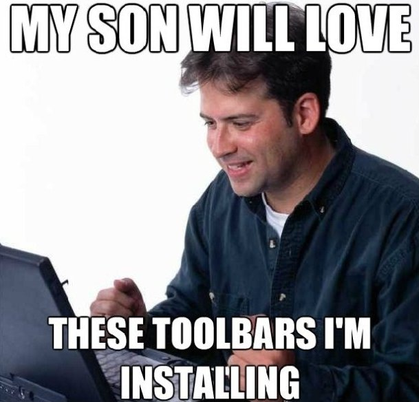
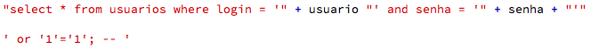
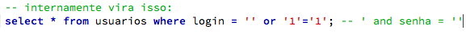
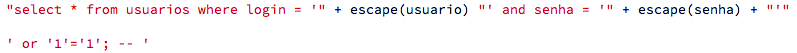
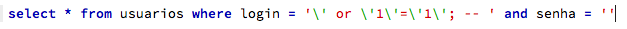

CEUNES - 2012

09/11/2012
Eu sou Plínio Balduino

Desenvolvedor, fuçador e barbudo
Desfazendo a confusão

Desfazendo a confusão
Crackers
Phreakers
Carders
Defacers
Script kiddies
Desfazendo a confusão
Eu não sou hacker
Gostaria de ser, mas não sou
Hackers não dizem que são hackers
O que é hacking?
Hacking é muito mais do que invadir computadores
Hacking é algo que pode ser aplicado em tudo na sua vida
Hacking é fruto de curiosidade e vontade de entender como as coisas funcionam
Qualquer coisa
O que é hacking?
Se isso é bom ou ruim depende do seu caráter
O que você precisa?
Seja curioso
Questione
Tenha vontade de aprender
Sempre vai ter alguém que sabe mais do que você
(bocejos)
Eu poderia falar um dia inteiro sobre life hacking
Mas vocês querem sangue, certo?
Conhecer o inimigo
É a melhor forma de se proteger dele
Saber por onde começar é o primeiro passo
Malware
Não instale o que você não conhece
Spywares, keyloggers, virus, trojans

Phishing Scam
Não saia clicando sem ler
Verifique o certificado do site
Cross Site Scripting
Use ferramentas atualizadas
Habilite o HTTPS no Twitter e Facebook
Engenharia social
Quem nunca?
Senhas são difíceis de lembrar
Senhas precisam ser difíceis para quem?
Quebra de senha
Força bruta
Ataque de dicionário
Packet sniffing
Redes desprotegidas
Como está a configuração da sua rede doméstica?
SQL Injection
Nunca confie no que o usuário digita
É uma forma primária de ataque


SQL Injection
Limpe todos os dados que receber


←
→
/
#